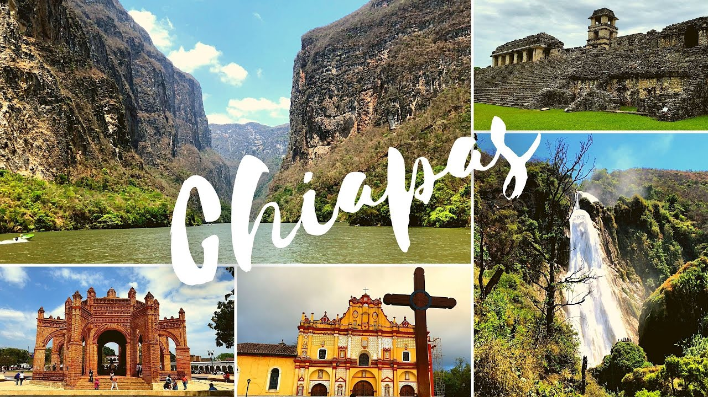
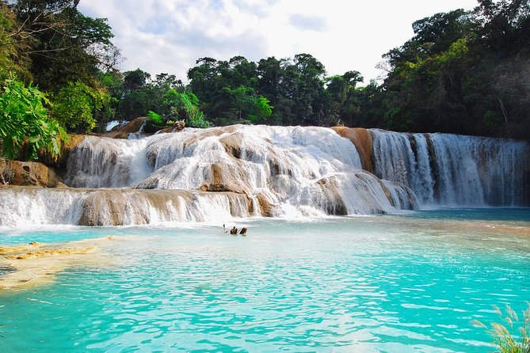

LUGARES TURISTICOS DE CHIAPAS
Los 3 municipios con mas lugares turisticos de chiapas
Tuxtla Gutierrez
San Cristobal
Palenque

Lugares turisiticos mas visitados
zona arqueologica de palenque
Cascada de agua azul
Lagunas de montebello

Empresas de Tours mas usadas
CE
Chiapas Ecoturs
SA
SelavAzul